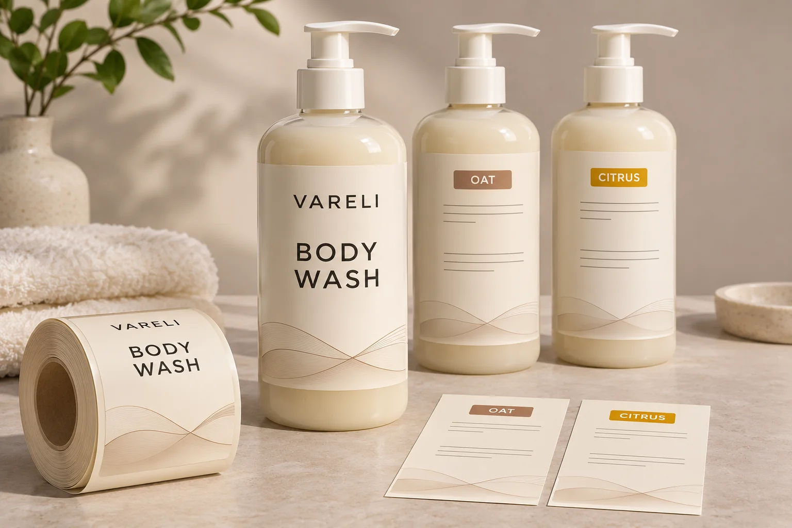
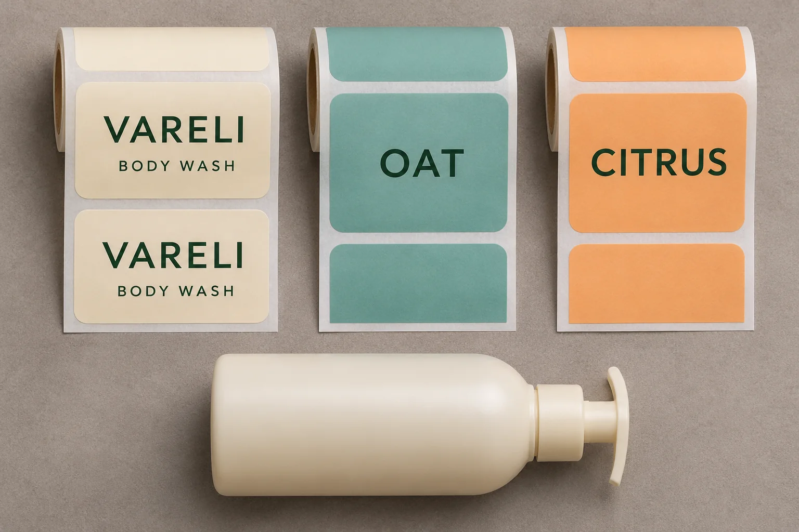

Share a front label across cosmetic SKUs when the approved front artwork and the physical label can stay identical, and the packing team can reliably match each bottle to its own back label. Ask for two prices before deciding: one for the shared front and separate backs, and one for complete labels by SKU. Compare the cost of making the same number of usable bottles.
Six scents at 500 bottles each could mean one order for 3,000 common fronts and six orders for 500 backs, if both the artwork and the line support that arrangement. The front quantity looks attractive on a quote. The backs still have six separate demand and supply decisions.

Check what would have to change on the front
Put the proposed front files and the actual containers next to each other. A common logo and the same dieline do not tell you whether the front is interchangeable. Compare product identity, declared size, claims, visual variant cues and the intended market and pack configuration. Then check the front label’s dimensions, material, finish and application position. Have the people responsible for artwork and product information confirm that the same finished front is suitable on each proposed pack.
Placement can determine what is eligible to share. For example, the FDA’s U.S. cosmetics labeling guide distinguishes the principal display panel from other information panels. Ask your label reviewer to confirm what must appear where for your particular packs and markets before moving any copy. Check how the variants look to a shopper from the shelf and in an online product photo, too. Your commercial team may need a front-facing scent cue even where the approved copy allows a common front.
Price two ways to make the same quantity of finished packs
For the shared-front quote, list the single front component and each distinct back separately. For the SKU-specific quote, list either one wrap per SKU or a dedicated front-and-back pair, depending on what the pack can use. A shared front can lower the quantity exposed to a change on one back. It can also add a matching step or a second application compared with a single wrap. Ask the packer to price those differences on the actual line, and use the same stock and finish assumptions where possible.
Ask the supplier what each quoted minimum covers and which proposed components it can actually produce together. Use the multi-SKU minimum order guide for the quantity discussion. Here the comparison is about which components to buy in the first place. Include component minimums, setup, proofs, application, inspection and any expected cost of excess labels. Count only the costs each option would incur. If either quote excludes work the other includes, put the missing price in a separate line before comparing totals.

Build a component and pairing worksheet
Use one row per finished SKU. For each row, write the bottle reference and market, the planned finished quantity, the approved front and back file revisions, and the quantities of usable components assigned to that SKU. Put any shared fronts left over on a separate line. Use actual supplier and packer figures for spoilage or trial allowances when available.
- SKU and quantity. For example, Oat, 500 finished packs, with the named bottle and approved market.
- Approved components. Record common front F01 and Oat back B01. Record the exact revisions beside both references. Repeat this for each proposed SKU, including Citrus with its own back.
- Usable sets. Count the lowest of the bottle quantity, the usable fronts allocated to that SKU, and the usable backs for that SKU. Allocate shared fronts once. Keep a running balance as each row is assigned.
- Pairing check. Ask the packing team how the job identifies the correct back, how it verifies the first applied pack and what it does at a changeover. Record its answer next to the component pair.
Say five variants have 500 usable backs each and Citrus has 470, with 3,000 usable fronts and enough bottles. That gives 2,970 complete packs and 30 unallocated fronts. The buyer can ask whether to order replacement Citrus backs or release 470 Citrus units if the commercial team permits it. If the order requires 500 Citrus packs, keep that shortage open when comparing quotes.
Run the worksheet again with a revised mix before selecting a quote. If the brand plans to move 30 units from Citrus to Oat and can obtain 30 more Oat backs and fill those bottles, the same front pool can cover the revised 3,000. Under a dedicated-pair quote, ask what it would cost to supply the additional Oat fronts too. The value of sharing the front depends on whether changes like this are realistic and whether the converter can supply the matching backs on time.
Decide when the shared front is ready to buy
Ask for an applied pair from each proposed artwork combination or agree with the responsible reviewers which combinations a representative sample can cover. Check the approved front and back against the finished SKU and confirm the packer can receive and identify the components separately. Use the applied-pair alignment guide if placement still needs approval.
Pause the shared-front purchase if one SKU requires different front copy, the packaging team cannot confirm a match at changeover, or a quoted quantity leaves an unresolved shortage. A dedicated front or wrap may be easier to run when variants have to be identifiable at a glance. A common front makes more sense when approved front artwork stays stable and separate backs can be tracked and priced.
For custom cosmetic bottle labels, send the front and back layout, bottle references, quantities by SKU and application method. Prepare a project inquiry asking to compare shared fronts with SKU-specific labels. Attach the artwork and pairing worksheet when sending the message by email or WhatsApp.